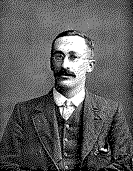

| годы жизни | 1876–1937 |
| страна | Ирландия / Англия |
| область | математическая статистика · пивоварение |
| главное | t-распределение (1908) · статистика малых выборок |
| характер | главный пивовар Guinness, публиковавшийся анонимно |
Статистику малых выборок придумал пивовар.
и напечатал её под чужим именем, чтобы не выдать секрет фирмы.
Уильям Госсет служил не в университете, а на пивоварне Guinness в Дублине. Задача была прикладная: судить о качестве ячменя и хмеля по горстке проб. Классическая статистика требовала больших выборок, а у Госсета их не было — десяток измерений, порой меньше.
На малых выборках нормальное приближение врёт: хвосты оказываются толще, чем обещает колокол. Госсет вывел распределение, которое это учитывает1, — с поправкой ровно на нехватку данных. Чем меньше проб, тем тяжелее хвосты; с ростом выборки оно сходится к нормальному.
«Пивоварню занимает не то, что верно в среднем, а то, что верно для этой партии.» — по духу работы Госсета
Guinness запрещала сотрудникам печататься — боялась выдать, что варит пиво по науке. Госсет опубликовался тайно, под псевдонимом «Student»2. Так распределение и вошло в историю — не под его именем, а под маской «студента».
Фишер придал t-распределению строгую форму и построил на нём t-критерий — основу проверки различий на малых данных. Всякий раз, когда сравнивают две группы по десятку наблюдений — в медицине, в A/B, в лаборатории, — работает наследие дублинского пивовара.